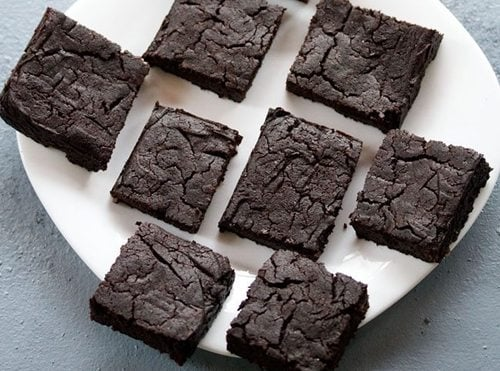

Eggless chocolate brownie

Ingredients
- ½ cup whole wheat flour or atta, leveled – 60 grams
- ⅓ cup cocoa powder, leveled – 30 grams
- 4 tablespoons oil – can use sunflower oil, olive oil or any neutral flavored oil
- In a mixing bowl or pan, take ½ cup of the whole wheat flour, ½ teaspoon baking powder and 1 pinch of salt.
- . With a whisk, mix everything very well. You can even sift this flour mixture, if you prefer. Keep aside
Preheat the oven at 200° C/392° F for 15 minutes.
Instructions
- Now, take 1 cup water in a pan and heat it on low to medium flame.
- Then, add 4 tablespoons oil. Here I have added the entire 4 tablespoons of oil with a measuring cup.
You can use any neutral flavored oil or olive oil. I used sunflower oil
- In a mixing bowl or pan, take ½ cup of the whole wheat flour, ½ teaspoon baking powder and 1 pinch of salt.
- Preheat the oven at 200° C/392° F for 15 minutes.
- Now, take 1 cup water in a pan and heat it on low to medium flame.